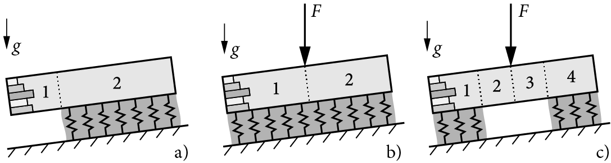

WEAC API Documentation¶
WEAC (Weak Layer Anticrack Nucleation Model) is a Python implementation of closed-form analytical models for the analysis of dry-snow slab avalanche release.
![Release](https://img.shields.io/github/v/release/2phi/weac.svg?display_name=tag&color=f99a44&style=flat-square&logo=)


What is WEAC?¶
WEAC implements closed-form analytical models for the mechanical analysis of dry-snow slabs on compliant weak layers, the prediction of anticrack onset, and allows for the analysis of stratified snow covers.
The model covers: - Propagation saw tests (a) - Skier-loaded weak layers (b) - Weak-layer crack nucleation (c)
{kind=link}
Quick Start¶
pip install weac
import weac
# Create a scenario configuration
scenario = weac.components.scenario_config.ScenarioConfig()
# Run analysis
results = weac.analysis.analyzer.Analyzer.analyze(scenario)
🐙 View on GitHub: GitHub Repository
Key Features¶
Closed-form analytical models for snow slab mechanics
Weak layer analysis with compliance and collapse modeling
Anticrack prediction using mixed-mode failure criteria
Stratified snow cover analysis capabilities
Python-native implementation with comprehensive documentation
Jupyter notebook support for interactive analysis
Documentation Structure¶
Getting Started
Utilities & Tools
Examples & Reference
Research & Citations¶
Cite the software: Rosendahl, P. L., Schneider, J., & Weissgraeber, P. (2022). Weak Layer Anticrack Nucleation Model (WEAC). Zenodo. https://doi.org/10.5281/zenodo.5773113
Key publications: - A closed-form model for layered snow slabs (Weißgraeber & Rosendahl, 2023) - Modeling snow slab avalanches caused by weak-layer failure (Rosendahl & Weißgraeber, 2020)
Support & Community¶
Getting Help¶
Documentation: This site provides comprehensive API documentation
Examples: Check the modules section for usage examples
Research Papers: Refer to the publications listed above for theoretical background
GitHub: Visit the repository for source code and issue tracking
Need help? Open an issue on GitHub or check the documentation structure below.